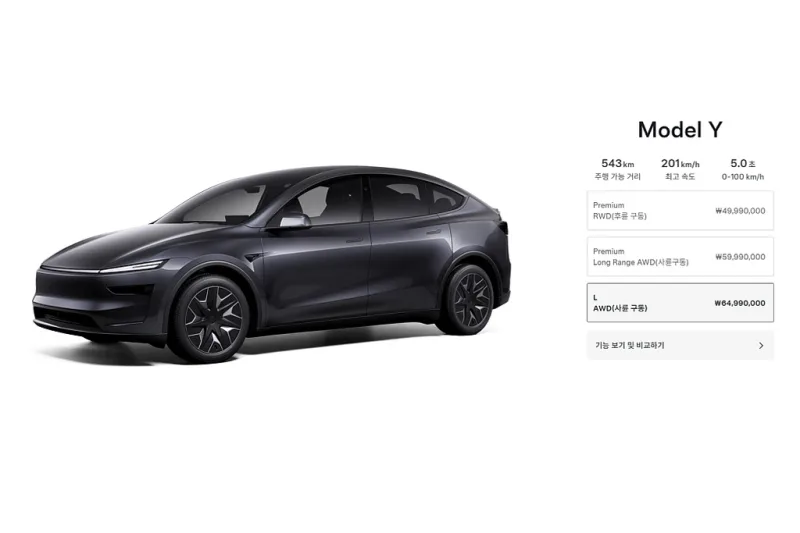
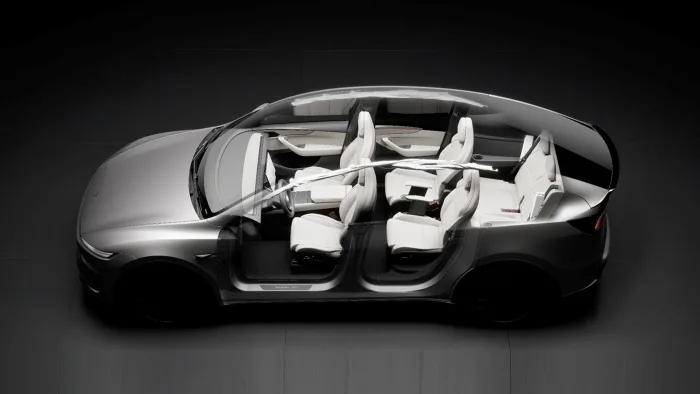
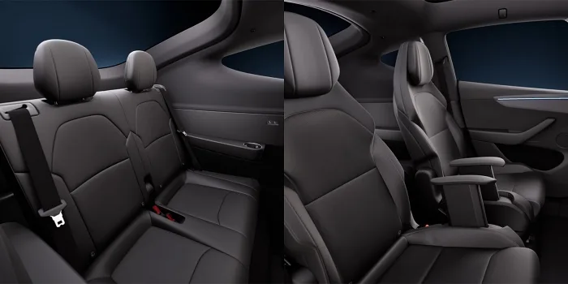

▲ 테슬라 모델 Y L. 모델 Y의 휠베이스를 150mm 늘린 3열 6인승 파생 모델이다
신차 가격은 보통 출시 후 한동안 고정됩니다. 연식이 바뀌거나 부분변경이 있을 때 조정하는 것이 관행입니다.
모델 Y L은 그 관행을 따르지 않았습니다. 4월 3일 6,499만원으로 나왔는데, 일주일 뒤 6,999만원이 됐고 7월 1일에는 7,299만원이 됐습니다. 석 달 만에 800만원, 비율로는 12.3%입니다.
1. 가격표가 두 번 바뀌었다
첫 인상은 출시 일주일 만이었습니다. 4월 3일에 6,499만원으로 나온 차가 4월 10일 6,999만원이 됐습니다. 초기 계약자와 그 뒤 계약자의 차이가 500만원입니다.

▲ 테슬라는 온라인 주문 방식이라 가격 변경이 즉시 반영된다 ⓒ 테슬라 / 탑라이더
두 번째는 7월 1일이었습니다. 300만원이 더 붙어 7,299만원이 됐습니다. 두 차례를 합치면 출시가 대비 800만원이 오른 것입니다.
| 시점 | 가격 | 변동 |
|---|---|---|
| 2026년 4월 3일 (출시) | 6,499만원 | — |
| 2026년 4월 10일 | 6,999만원 | +500만원 |
| 2026년 7월 1일 | 7,299만원 | +300만원 |
| 누적 | — | +800만원 (12.3%) |
📍 테슬라의 가격이 자주 움직이는 이유
전통적인 완성차는 딜러망을 거치기 때문에 가격을 바꾸면 재고와 계약 조건이 얽힙니다. 테슬라는 온라인 직판 구조라 가격표를 즉시 바꿀 수 있습니다.
이 구조는 인하할 때는 소비자에게 유리하게 작동하지만, 인상할 때는 예고 없이 오른다는 뜻이기도 합니다. 계약 시점이 곧 가격을 확정하는 시점이 됩니다.
2. 보조금 구간이 함께 움직였다
가격 인상은 보조금 계산에도 영향을 줍니다. 국내 전기차 보조금은 차량 가격 구간에 따라 지급률이 달라지는 구조이기 때문입니다.
7,299만원은 국비 보조금이 전액 지급되는 구간이 아닙니다. 즉 가격이 오른 만큼 실구매가가 그대로 오르는 데 더해, 보조금 측면에서도 유리해질 여지가 없습니다.

▲ 3열 6인승 구조. 2열은 좌우 독립 캡틴 시트다 ⓒ 테슬라 / 탑라이더
보조금 지급률은 매년 기준이 바뀝니다. 구매를 검토한다면 계약 시점의 지자체별 보조금까지 함께 확인해야 실구매가가 나옵니다. 차값만 비교하면 지역에 따라 수백만원이 어긋납니다.
3. 그래서 어떤 차인가
모델 Y L은 별도 모델이 아니라 파생형입니다. 모델 Y를 기준으로 휠베이스를 150mm 늘리고 전고를 44mm 높였습니다.
| 항목 | 수치 |
|---|---|
| 전장 × 전폭 × 전고 | 4,969 × 1,920 × 1,668mm |
| 휠베이스 | 3,040mm (모델 Y 2,890mm) |
| 좌석 | 3열 6인승 |
| 배터리 | 97.25kWh 롱레인지 기본 |
| 복합 주행거리 | 543km |
| 공차중량 | 2,090kg |

▲ 2열 캡틴 시트에는 열선과 통풍이 들어간다 ⓒ 테슬라 / 탑라이더
2열이 핵심입니다. 좌우 독립형 프리미엄 캡틴 시트에 열선과 통풍이 들어가고, 레그룸과 헤드룸이 넓어졌습니다. 3열을 쓰지 않는 날에는 2열 중심의 4인승처럼 쓸 수 있는 구성입니다.
배터리는 97.25kWh 롱레인지가 기본입니다. 차체가 커지고 무거워진 만큼 용량을 키웠고, 복합 543km를 인증받았습니다. 공차중량은 2,090kg입니다.
4. 어디서 만드는가
국내 도입분은 전량 중국 상하이 기가팩토리에서 생산됩니다. 모델 Y L은 중국에서 먼저 나온 파생형이고, 한국 물량도 같은 공장에서 옵니다.

▲ 기준이 되는 모델 Y. 여기서 휠베이스를 늘린 것이 모델 Y L이다 ⓒ 테슬라
생산지가 가격과 무관하지는 않습니다. 환율과 물류비, 관세 조건이 바뀌면 원가가 움직이고, 온라인 직판 구조에서는 그 변동이 가격표에 비교적 빠르게 반영됩니다. 이번 두 차례 인상도 그 맥락에서 읽을 여지가 있습니다.
5. 지금 사도 되나
판단의 기준은 두 가지입니다. 하나는 3열이 실제로 필요하냐이고, 다른 하나는 같은 예산의 대안입니다.
3열 6인승 전기 SUV로 좁히면 선택지가 많지 않습니다. 국내에서는 현대 아이오닉 9과 기아 EV9이 직접 경쟁 상대이고, 두 차 모두 할인 조건에 따라 실구매가가 크게 움직입니다.
다만 모델 Y L에는 다른 변수가 하나 더 있습니다. 가격이 또 바뀔 수 있다는 점입니다. 지난 석 달 동안 두 번 올랐다는 사실 자체가, 이 차의 가격표를 고정된 정보로 다루면 안 된다는 신호입니다.
정리하면 이렇습니다. 모델 Y L은 국내에서 흔치 않은 3열 6인승 전기 SUV이고, 제원상 부족한 점은 없습니다. 문제는 그 가격이 계약하는 날에 결정된다는 것입니다. 검색으로 본 가격과 주문 페이지의 가격이 다를 수 있습니다.